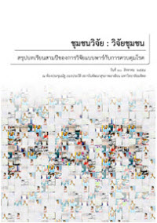
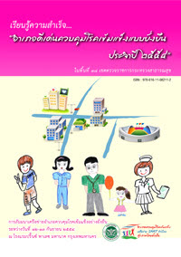
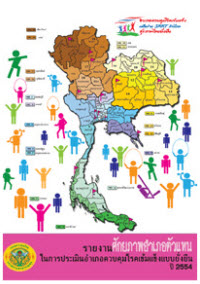

- โรคติดต่อทั่วไป
- โรคจากการประกอบ-
อาชีพและสิ่งแวดล้อม - โรคติดต่อนำโดยแมลง
- โรคไม่ติดต่อ
- โรคติดต่อจากการสัมผัส
โรคติดต่อทั่วไป
- กาฬโรค (Plague)
- กาฬหลังแอ่น (Meningococcal Meningitis)
- ไข้ริฟต์ วาลเลย์ (Ritt Valley fever, RVF)
- ไข้หวัดนก (Avian Influenza)
- ไข้เหลือง (Yellow fever)
- ไข้เลือดออกอีโบลา
- ไข้เลือดออกแอฟริกัน
- คอตีบ (Diphtheria)
- คางทูม (Mumps)
- โรคชีวพิษโบทูลีน
- โรคซาร์ส (SARS)
- ตับอักเสบบี (Hepatits B)
- ทริคิโนซิส (Trichinosis)
- บาดทะยัก (Tetanus)
โรคจากการประกอบอาชีพและสิ่งแวดล้อม
โรคติดต่อนำโดยแมลง
โรคไม่ติดต่อ
- โรคที่เกิดจากสุรา
- โรคจากการสูบบุหรี่
- ความรู้ทั่วไปเกี่ยวกับโรคมะเร็ง
- โรคมะเร็งชนิดต่างๆ
- download เอกสารความรู้โรคมะเร็ง
- บุหรี่กับโรคหัวใจ
- มะเร็ง "ปอด" กับบุหรี่
- บุหรี่กับโรคถุงลมโป่งพอง
- โทษพิษภัยจากบุหรี่
- อัมพาตครึ่งซีก
- การฟื้นฟูสมรรถนะหลังเป็นอัมพาต
- อาการของเส้นเลือดในสมองแตก
- กิน – อยู่อย่างไรให้ห่างไกลอัมพฤกษ์ อัมพาต
โรคติดต่อจากการสัมผัส
-
ถาม - ตอบ ข้อข้องใจปัญหา KMถาม KM ต่างจากการจัดทำระบบสารสนเทศอย่างไร
ตอบ สารสนเทศเป็นประเภทหนึ่งของความรู้ เป็นการนำข้อมูล(ดิบ)มมาวิเคราะห์ โดยใช้ค่าทางสถิติ เพื่ออธิบายแนวโน้มของสิ่งที่เกิดเป็นปรากฏการณ์ แต่ต้องระวังความน่าเชื่อถือของการวิเคราะห์ เมื่อนำสารสนเทศที่ผ่านการวิเคราะห์ไปใช้แล้ว เราจึง เรียกว่า "ความรู้"

จัดพิมพ์โดย : xxxxxx จำนวนหน้า : 2110 160 100 -

หวัดใหญ่2009 บทเรียนครั้งเก่า...สู่การเรียนรู้ครั้งใหม่ในปีพ.ศ. 2552 ที่ผ่านมา ประเทศไทยและประชากรโลกได้ประสบภัยพิบัติจากโรคไข้หวัดใหญ่สายพันธุ์ใหม่ 2009 หรือที่เรียกอย่างเป็นทางการว่าไข้หวัดใหญ่สายพันธุ์ใหม่ชนิดเอ(เอ็ช1เอ็น1) ซึ่งท่านศาสตราจารย์เกียรติคุณนายแพทย์ประเสริฐ ทองเจริญ ได้เรียกว่าเป็นการ "ระบาดบันลือโลก" จากรายงานผู้ป่วยรายแรกประมาณกลางเดือนเมษายน 2553 ที่ประเทศเม็กซิโก ต่อมาโรคได้แพร่กระจายไปยังประเทศต่างๆทั่วโลก โดยเฉพาะประเทศสหรัฐอเมริกาถือได้ว่าเป็นประเทศที่มีระบบการเฝ้าระวังป้องกันควบคุมโรคที่ดีที่สุด ยังไม่สามารถต้านทานได้ มีการพบผู้ป่วยแพร่กระจายไปทุกมลรัฐจนองค์การอนามัยโลกต้องประกาศยกระดับการระบาดเป็นระดับสูงสุด
จัดพิมพ์โดย : xxxxxx จำนวนหน้า : 233 10 196 -
บันทึกการเรียนรู้ การขับเคลื่อนงานป้องกันควบคุมโรคในชุมชน โดยกระบวนการมีส่วนร่วมของชุมชน (7 กรณีศึกษา)บุคลากรของ สคร. ต้องปรับบทบาทและพัฒนา ความสามารถในการทำงานร่วมกับชุมชน ปรับแนวคิดและ วิธีการจากผู้ปฏิบัติมาเป็น "ผู้สนับสนุน ผู้หนุนเสริม" ชักชวน ให้ผู้เกี่ยวข้องด้านสุขภาพมาทำงานร่วมกัน กรมควบคุมโรค ก็ต้องมี "คลังความรู้" เพื่อจัดเก็บความรู้ต่างๆ ที่ต้องใช้งาน รวมทั้งมีการ "ถ่ายทอดความรู้" อย่างเป็นระบบ ปรับแนวคิดและ วิธีการจากผู้ปฏิบัติมาเป็น "ผู้สนับสนุน ผู้หนุนเสริม" ชักชวน ให้ผู้เกี่ยวข้องด้านสุขภาพมาทำงานร่วมกัน กรมควบคุมโรค ก็ต้องมี "คลังความรู้" เพื่อจัดเก็บความรู้ต่างๆ ที่ต้องใช้งาน รวมทั้งมีการ "ถ่ายทอดความรู้" อย่างเป็นระบบ
จัดพิมพ์โดย : xxxxxx จำนวนหน้า : 23 90 16 -

ชุมชนกับการควบคุมโรค แนวคิดและบทเรียนจากการวิจัยเชิงปฏิบัติการแบบมรส่วนร่วมชุมชนวิจัย : วิจัยชุมชน การขยายการมีส่วนร่วมของชุมชน ในการนิยามคววามจริง และการสร้างและใช้ความรู้ เพื่อการเผชิญกับวิกฤตทางสุขภาพและสังคม อันเป็นหลักการพื้นฐานของสิ่งที่เรียกว่า การวิจัยเชิงปฏิบัติการแบบมีส่วนร่วม เป็นหนึ่งในการเคลื่อไหวตามแนวทางที่ว่านั้น
จัดพิมพ์โดย : xxxxxx จำนวนหน้า : 200 168 19 -

เรียนรู้ความสำเร็จ อำเภอดีเด่นควบคุมโรคเข้มแข็งแบบยั่งยืน ประจำปี 2554หนังสือ "เรียนรู้ความสำเร็จ...อำเภอดีเด่นควบคุมโรคเข้มแข็งแบบยั่งยืน ประจำปี 2554 ในพื้นที่ 18 เขตตรวจราชการกระทรวงสาธารณสุข" เล่มนี้ เป็นการถ่ายทอดเรื่องราวความสำเร็จในการดำเนินงานของอำเภอ จนได้รับรางวัล "อำเภอดีเด่นควบคุมโรคเข้มแข็งแบบยั่งยืน" ในปี 2554 กรมควบคุมโรคขอขอบคุณบุคคลทั้งหมดที่มีส่วนเกี่ยวข้องให้ "อำเภอเข้มแข็งแบบยั่งยืน" ปรากฏขึ้นจริงอย่างเป็นรูปธรรมในพื้นที่ของทั้ง 18 เขตตรวจราชการ และหวังว่า หนังสือเล่มนี้จะช่วยจุดประกายให้กับทีมงานสุขภาพในระดับอำเภออื่นๆ กลับไปพัฒนาอำเภอตนเองให้เกิดกระบวนการพัฒนาสุขภาพของประชาชนในพื้นที่รับผิดชอบและขยายผลผลักดันสู่การเป็น "อำเภอควบคุมโรคเข้มแข็งแบบยั่งยืน" ต่อไป
จัดพิมพ์โดย : xxxxxx จำนวนหน้า : 135 80 300 -

รายงานศักยภาพอำเภอตัวแทนในการประเมินอำเภอควบคุมโรคเข้มแข็งแบบยั่งยืน ปี 2554การบริหารทรัพยากรจากส่วนภูมิภาคสู่ท้องถิ่นและชุมชน เพื่อแก้ไขปัญหาของประชาชนในพื้นที่ มีศูนย์รวมและจุดเชื่อมโยงในการดำเนินงานอยู่ที่หน่วยงานระดับ "อำเภอ" เช่นเดียวกับการดำเนินงานเฝ้าระวังป้องกันควบคุมโรค ซึ่งมีการดำเนินงานเป็นปกติของหน่วยงานสาธารณสุขระดับอำเภออยู่แล้ว แต่ขาดการเชื่อมโยงภาพเชิงระบบ และมีความเข้มแข็งแตกต่างกันในแต่ละพื้นที่ กรมควบคุมโรค กระทรวงสาธารณสุข เห็นความสำคัญของการสนับสนุน ผลักดัน ให้เกิดความร่วมมือระหว่างหน่วยงานภายใต้กระทรวงสาธารณสุขกับหน่วยงานอื่นๆในจังหวัดและอำเภอ เพื่อให้เกิดภาพของระบบเฝ้าระวัง ป้องกันควบคุมโรคและภัยสุขภาพระดับอำเภอ โดยการมีส่วนร่วมของทุกภาคส่วน ดังนั้นในปี 2554 กรมควบคุมโรคจึงได้มีนโยบาย "อำเภอควบคุมโรคเข้มแข็งแบบยั่งยืน" เพื่อพัฒนาระบบการเฝ้าระวัง ป้องกัน ควบคุมโรค ในระดับอำเภอให้มีความชัดเจรขึ้น
จัดพิมพ์โดย : xxxxxx จำนวนหน้า : 240 160 196จัดพิมพ์โดย : xxxxxx จำนวนหน้า : 240 196 160